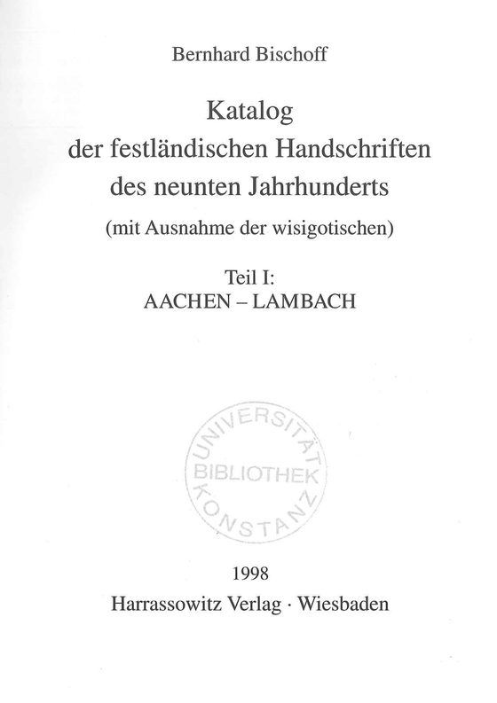
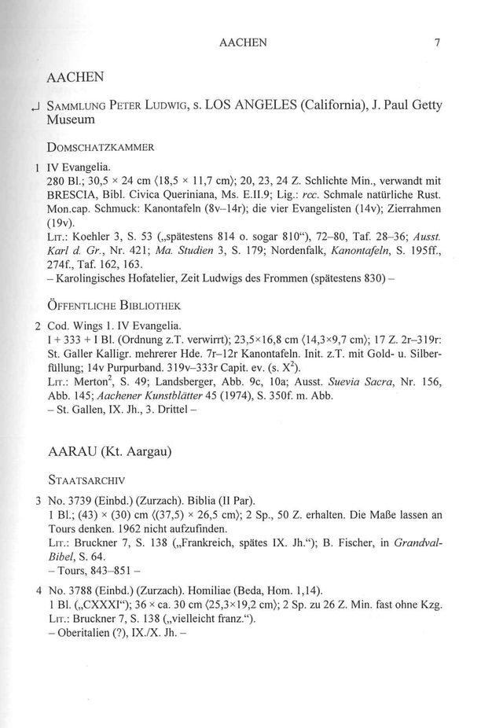
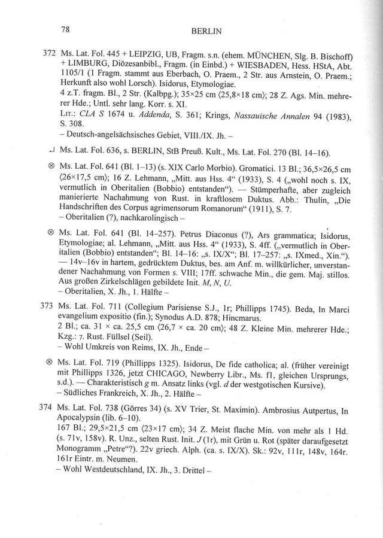
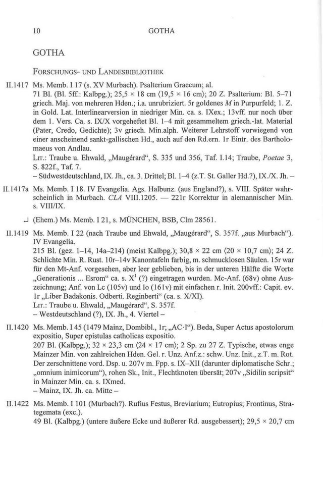
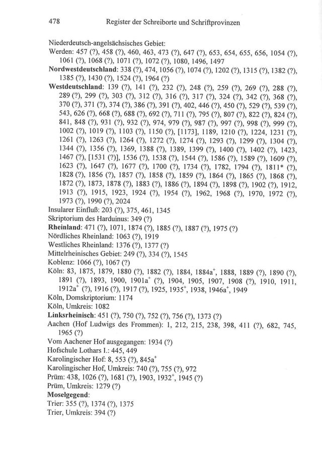
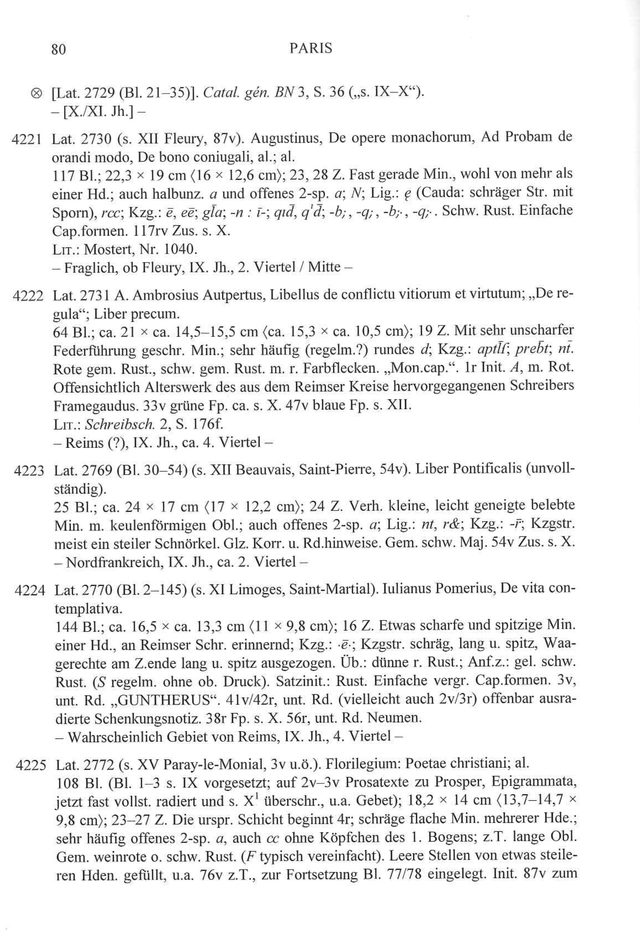

Erzählung 1
Der Bestand
Teil I (1998) ist mit 516 von 518 Seiten gelesen, Teil II (2004) mit 464 von 465, Teil III (2014) mit 658 von 658. Fünf Kapitel zeigen die Bände, die Orte, die Ursprungsangaben und die Datierung.
Digitale Edition · Portal
Bernhard Bischoffs Katalog beschreibt die festländischen Handschriften des neunten Jahrhunderts in drei Teilen mit zusammen 1.641 Seiten. Die PDAI hat davon 1.638 Seiten in eine Struktur mit festen Feldern übertragen, für 10.014 Einträge und Verweise. Diese Seite zeigt, was gelesen ist, wo die Handschriften liegen und was noch fehlt.
Grundlage ist Bernhard Bischoff, Katalog der festländischen Handschriften des neunten Jahrhunderts (mit Ausnahme der wisigotischen), Wiesbaden: Harrassowitz Verlag; Teil II und III aus dem Nachlaß herausgegeben von Birgit Ebersperger. Die Rechte für die öffentliche Bereitstellung der Digitalisate sind nicht geklärt; diese Seite zeigt nur Ausschnitte.
Erzählung 1
Teil I (1998) ist mit 516 von 518 Seiten gelesen, Teil II (2004) mit 464 von 465, Teil III (2014) mit 658 von 658. Fünf Kapitel zeigen die Bände, die Orte, die Ursprungsangaben und die Datierung.
Erzählung 1, Kapitel 2
Die Handschriften liegen heute in Bibliotheken an 260 Orten. Paris führt mit 1.640 Einträgen, München folgt mit 819.
Erzählung 2
8.163 Haupteinträge tragen eine laufende Nummer; dazu kommen 1.116 Verweise, 526 Einträge mit dem Zeichen ⊗ und weitere Sonderarten. Das Feld für die Provenienz ist in 29 Prozent der Haupteinträge belegt, das für den Ursprung in 91.
Digitale Edition
Faksimile und Transkription nebeneinander. Die Transkription erscheint als Katalogseite mit Kopfzeile und Einträgen; Seiten ohne Transkription zeigen das Faksimile und den Hinweis, dass sie noch nicht gelesen sind.
Was noch fehlt
Kein Scan fehlt: alle 1.641 Druckseiten liegen als Bild vor, 1.638 davon als lesbare Transkription. 3 Seiten brechen im XML ab (Bischoff1998 Seite 5, Bischoff1998 Seite 21, Bischoff2004 Seite 392). Der Bereitschaftsbericht vom 30. September 2026 lautet „suchbereit“; offen daran ist: nichts weiter.
Erläuterung des methodischen Ansatzes
Jede Zahl auf dieser Seite wird beim Bauen aus den Quellen der PDAI gelesen: aus den Seiten-XML der Bände, aus dem Prüfbericht und aus dem Bereitschaftsbericht der Sammlung. Fehlt eine Quelle, bricht der Bau ab.
Die Transkription folgt einem Schema mit festen Feldern (Nummer, Signatur, Inhalt, Maße, Schrift, Ursprung, Literatur). Sie wurde an einer Pilotseite geprüft, bevor sie auf die Bände lief. Gezählt werden nur transkribierte Seiten; auf die übrigen wird nichts hochgerechnet.
Die Blätter zeigen den Aufbau des Katalogs, vom Titelblatt über die Einträge bis zum Register und zu einer Seite aus Teil III.

Teil I, Seite 1Titelblatt von Teil I, Aachen – Lambach, Wiesbaden 1998.
Teil I, Seite 29Aachen, gedruckte Seite 7; der Eintrag 2 steht unten im Muster.
Teil I, Seite 100Berlin mit den Zeichen ⌙ und ⊗ in der Nummernspalte.
Teil II, Seite 27Gotha in den Nachträgen zu Teil I: die Pilotseite, an der die Regeln für die Sonderzeichen geprüft wurden.
Teil I, Seite 500Register der Schreiborte und Schriftprovinzen.
Teil III, Seite 100Paris, gedruckte Seite 80, mit sechs Katalogeinträgen.Ein echter Eintrag aus Teil I, so wie ihn die Transkription in Felder gliedert. Das Muster ist der erste Haupteintrag, der alle Felder von der Signatur bis zur Literatur belegt.
Eintrag 2, Aachen, gedruckte Seite 7 von Teil I
Links das Faksimile, rechts dieselbe Zeile in den Feldern des Schemas. Der Text steht wie gelesen da; Abkürzungen sind nicht aufgelöst.
Gezählt sind die Seiten, für die eine Transkription vorliegt.
| Teil | Titel | Jahr | Seiten |
|---|---|---|---|
| Teil I | Aachen – Lambach: 516 von 518 Seiten transkribiert | 1998 | 518 |
| Teil II | Laon – Paderborn: 464 von 465 Seiten transkribiert | 2004 | 465 |
| Teil III | Padua – Zwickau: 658 von 658 Seiten transkribiert | 2014 | 658 |
Was diese Seite zeigt, stammt aus den folgenden Quellen.
Teil I 1998, Teil II 2004, Teil III 2014; Wiesbaden: Harrassowitz Verlag, in der Reihe der Kommission für die Herausgabe der mittelalterlichen Bibliothekskataloge Deutschlands und der Schweiz. Teil II und III sind aus dem Nachlaß herausgegeben von Birgit Ebersperger.
Schemagebundene Transkription mit qwen3.8:27b-mlx: 1.131 Seiten. 507 Seiten tragen einen anderen oder keinen Modellstempel.